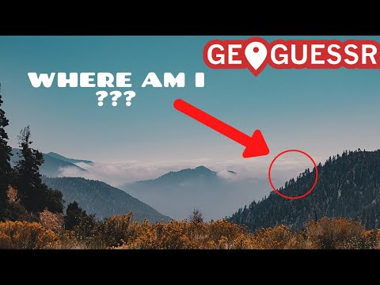
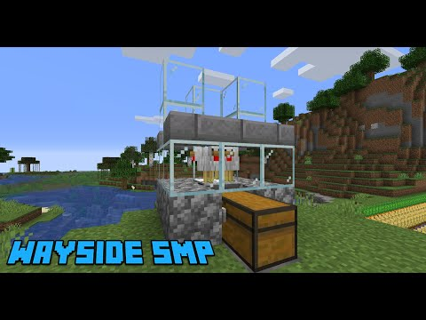
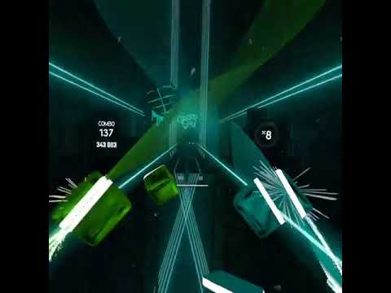

YouTube · Creator case study
My YouTube channel:
AtrayGaming
I have published 300+ videos on YouTube since 2014. This page looks at how I make them, and at the questions I ask about the response.
Evidence note: The video below is published work from my channel. The title alternatives on this page are untested copy studies. The lifetime figures in section 07 are my own YouTube Studio totals; I claim no retention or testing results I have not run.
I started by making what I wanted to watch.
I started with content I wanted to make and communities I wanted to be part of. Over time, publishing became hands-on practice in choosing an idea, making it understandable, and giving someone a reason to watch.
Much of that work involved gaming. The transferable experience is broader: editing for an audience, balancing a title with a thumbnail, publishing consistently enough to learn, and paying attention to the response.
I have run the channel on my own the whole time: ideas, filming, editing, titles, thumbnails, publishing, and reading the response.
Audience and objective
The audience varied by upload. For the music example below, the likely entry point is someone looking for a piano performance of a recognizable track. That is a working interpretation of the title, not verified traffic-source data. My objective as an independent creator was to make something people would choose to watch and respond to.
A published example: the “Hello” piano cover.
“Hello” By OMFG Piano Cover is an existing video from my channel. It shows a different side of the same creator background and keeps the work available directly in this case study.
Published creator work
“Hello” by OMFG
Piano Cover
Original upload from Alex's YouTube channel.
Loading the player connects to YouTube. If the embed is unavailable, watch the original video on YouTube.
More from the channel: gaming
The published work is mostly gaming. Three examples, with their original thumbnails:



The channel keeps its original name, AtrayGaming. I treat it as a body of independent creative work. Public views or subscriber counts alone cannot explain why a video performed as it did.
How I package a video.
- Choose a specific idea. Identify the person who would care and what they should get from watching. For a cover, the recognizable song and performance format are the promise.
- Package the video. Let the title explain what the video is and use the thumbnail to make the subject readable at a small size. The two should work together.
- Plan the opening. Review how quickly the actual content begins. An opening should earn attention before asking viewers for anything.
- Publish and listen. Read comments for questions and reactions, then compare them with whatever performance data is available. A strong comment is useful context, not representative audience research.
Packaging exercise: the published title
Original title
“Hello” By OMFG Piano Cover
The song, artist, and format are explicit. That gives a viewer a clear expectation. Without traffic-source and impression data, I cannot attribute discovery or watch time to this title.
Alternative A
OMFG: Hello | Piano Cover
An order that leads with artist and track. I would test whether it is easier to recognize in a music-search context.
Alternative B
Hello on Piano | OMFG Cover
An order that leads with the performance format. I would test whether viewers correctly anticipate the content.
Untested copy studies. Neither alternative is presented as a published change or an improvement in performance.
How I test a new package
I hold the title fixed and compare a clear performance frame with a tighter instrument-focused thumbnail, using owned frames from the video. I ask a small group what each promises before any channel test, and I never change the title, thumbnail, and opening at the same time.
The analytics questions I ask.
I read YouTube Analytics as a record of creative decisions. A title, a thumbnail, and an opening all show up later as a click, a drop-off, or a returning viewer. I compare videos over consistent time windows and look for patterns across the catalog, not single impressive numbers. These are the questions I work through.
| Question | Evidence I use | Decision it informs |
|---|---|---|
| Does the packaging earn a relevant click? | Impressions and impression click-through rate, split by traffic source where available | Whether to investigate the topic, title, thumbnail, or distribution mix |
| Does the opening match the promise? | Retention at 0:30 and the opening retention curve | Whether to shorten setup or make the content clear sooner |
| Where does attention change? | Average view duration, average percentage viewed, and dips or spikes | Which moments need a closer editorial review; the curve alone does not prove why |
| What reaches the intended audience? | Traffic sources, search terms where available, new / returning viewer context, comments | Which follow-up ideas may be relevant |
| Is there value beyond the first upload? | Longer-term discovery, repeat questions, usable excerpts, production hours | Whether an evergreen follow-up or adapted version is worth the effort |
YouTube's engagement reporting definitions provide the reference for average view duration and retention. The questions and the method are my own.
What I can bring to a content team.
Independent creation taught me ownership: an idea needs a finished edit, a clear title, a thumbnail, and a reason to exist for an audience. It also made me interested in the gap between what a creator intends and how viewers respond.
For branded content, I would bring that practical experience into a more structured brief: audience, objective, approvals, distribution, and a measurement plan agreed on before publishing. Those are the strategic skills I'm continuing to develop.
Demonstrated here
A real published work sample, independent publishing experience, a specific packaging critique, and a working method for evaluating content.
What ten years of uploading taught me.
These are working lessons from publishing my own channel since 2014, stated plainly. They are observations about the work, not performance claims.
Finishing beats planning.
An idea only teaches you something once it is published. A finished edit with a clear title and thumbnail, out on schedule, produced more useful feedback than a bigger video that stayed in progress.
The package is part of the work.
A title and a thumbnail are not decoration added at the end. They set the promise the opening has to keep, and I learned to think about them while making the video, not after it.
Comments are context, not data.
A strong comment tells me how one viewer read a video; it is useful, but it is not representative audience research. Pairing comments with the analytics, and knowing what each can and cannot say, keeps me from over-reading either one.
What the numbers show
I have the full history in YouTube Studio, so this section uses real numbers instead of impressions. Across more than 300 videos, the channel has 189,129 lifetime views and about 3,648 hours of watch time. The honest headline is concentration. One video, my piano cover of "Hello" by OMFG, accounts for about 34 percent of all views and about 36 percent of all watch time. The six most viewed videos, all of them piano covers and Beat Saber song plays, hold about 54 percent of lifetime views. Most of the rest is series episodes and streams that played to the small audience I already had, often to fewer than 100 views each. Two things follow. Work built around a song people were already searching for kept finding new viewers for years, long after I stopped uploading. Work made for existing subscribers did not travel. The dates make the second point on their own: nearly everything on the channel is from 2014 to 2020, before I stepped away to finish college. If there is one lesson I take into content work, it is that packaging a video around what an audience is looking for matters more than publishing more of what they are not.
The channel in numbers
- Lifetime views: 189,129
- Lifetime watch time: 3,647.8 hours
- Videos published: 300+ since 2014
- Most viewed video: "Hello" by OMFG, piano cover, at 64.3K views
- Top six videos combined: about 54 percent of lifetime views
- Formats at the top of the catalog: piano covers and Beat Saber song plays